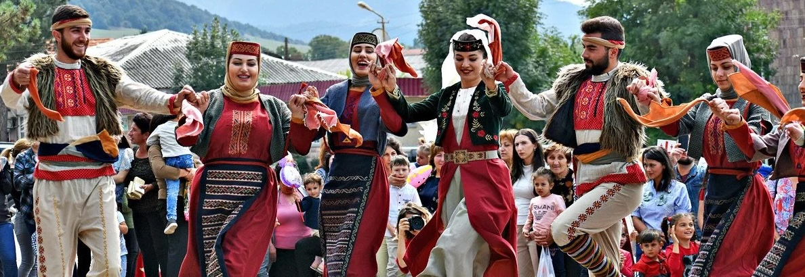
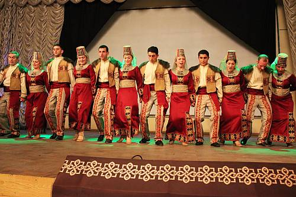
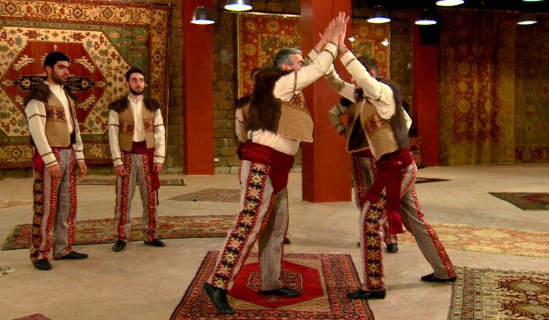
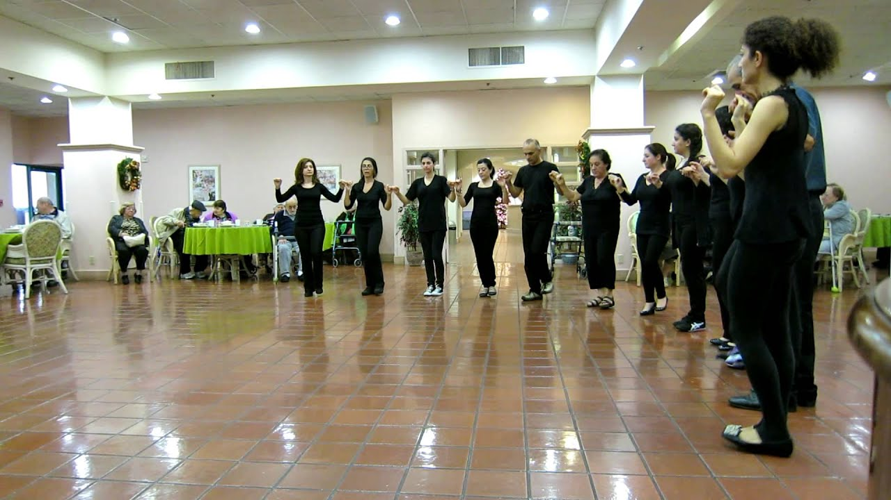
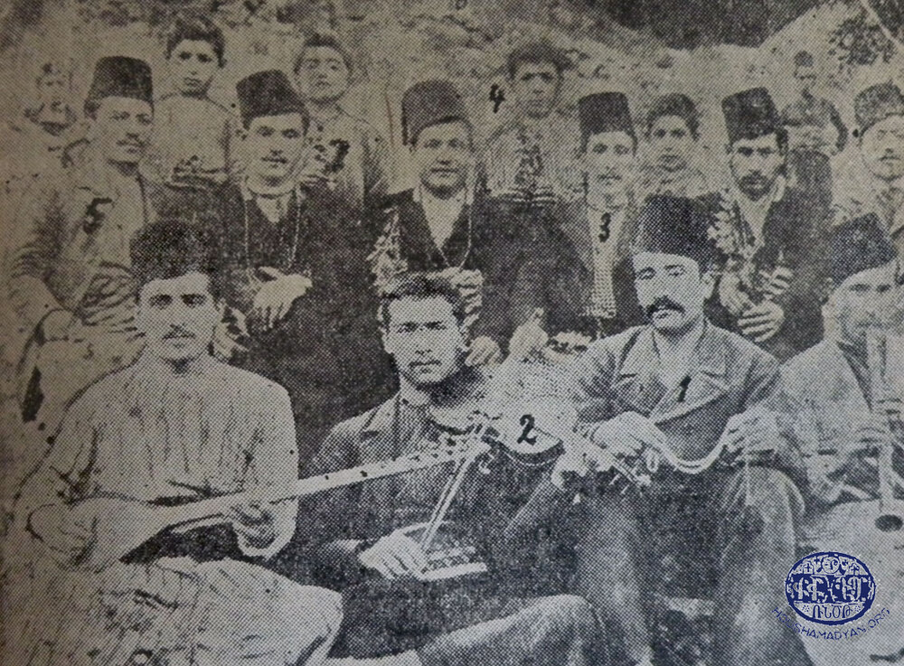
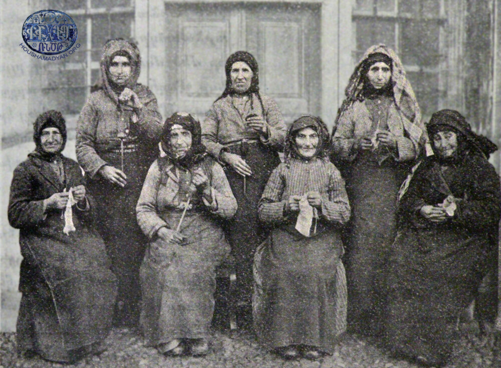
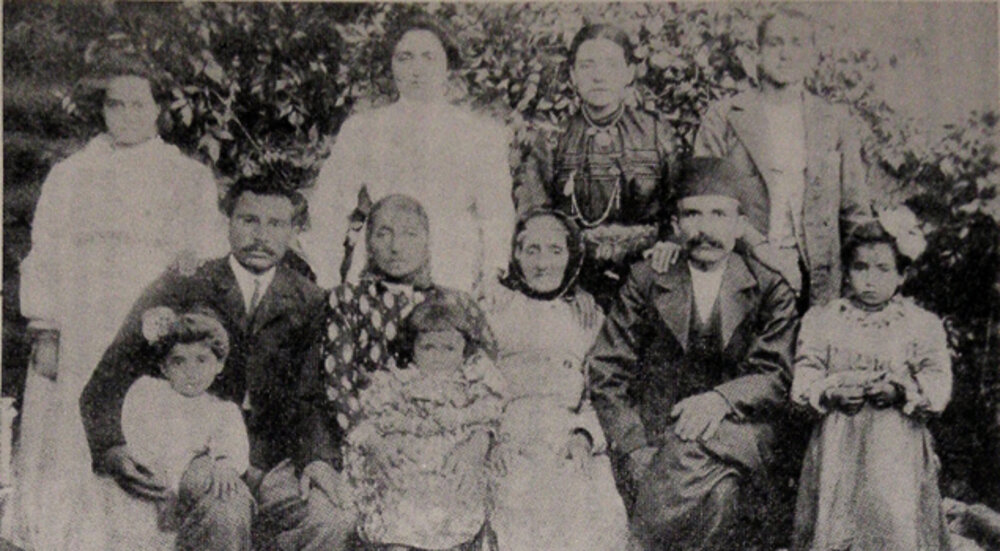

A popular set of regional dances from all across the Armenian Highlands, typically with a "stomp" step

Ancient war dance representing the clashing of rams

A popular set of regional dances mainly from Western Armenia and particularly popular in the Diaspora




Arapgir Yerzinga Palou
The tradition of Armenian dance is quite ancient and storied, bearing witness to countless centuries of Armenian history. During Soviet times, a major change was made: wWhereas dance was traditionally a group-collective activity, which was passed from generation to generation and learned naturally, Soviet Armenian authorities were eager to show the vastness of Soviet culture and the expertise of those representing it — dancers from the State Dance Ensemble. Under the direction of classically trained ballet dancers, Armenian dance underwent major balleticization. At the same time, the post-Soviet reaction to the balleticization of Armenian dance also has its flaws. Much of the modern revival movement surrounding Armeinan dance is steeped in nationalist rhetoric and excludes the reality of the inherent international nature of Armenian dances. Most dances are ones that we share with our neighbors: Ghosh Bilezig/Hoş Bilezi (shared with Turks), Uzundara/Uzundərə (shared with Azerbaijanis), Khumkhuma/Ximximê (shared with Kurds), Lorge (shared with Kurds), Ishkhanats/Sheykhani (shared with Assyrians), Tamzara (shared with Assyrians and Turks), etc.